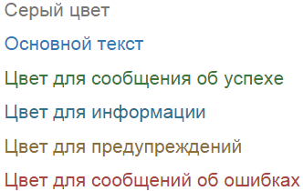
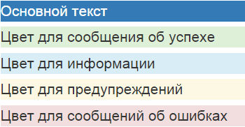
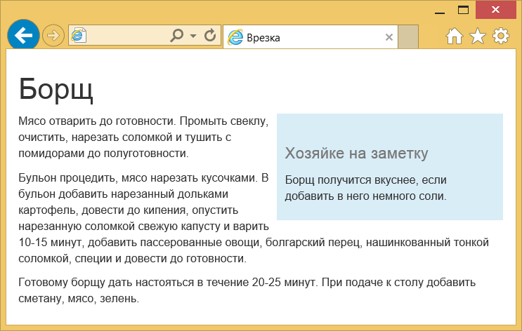

Стили
Boostrap содержит множество готовых стилей для оформления элементов.
Применять их достаточно просто, всего то надо добавить к элементу определённый в стилях класс.
Это сокращает время на разработку проекта, поскольку не приходится задумываться о дизайне отдельных элементов.
Стиль некоторых элементов, вроде заголовков
Цвет и фон
Для веб-страницы устанавливается белый цвет фона, набор шрифтов Helvetica Neue, Helvetica, Arial и цвет текста #333.
Вы также можете использовать заданный набор цветов для привлечения внимания к тексту и создания информационных сообщений.
Серый цвет
Основной текст
Цвет для сообщения об успехе
Цвет для информации
Цвет для предупреждений
Цвет для сообщений об ошибках
Результат применения этих классов:
Подобным же образом можно менять цвет фона у текста или другого элемента, например, кнопок.
Немного поменяются имена классов, но принцип сохранится.
Основной текст
Цвет для сообщения об успехе
Цвет для информации
Цвет для предупреждений
Цвет для сообщений об ошибках
Результат применения этих классов:
Врезки
Для создания врезок предназначены классы pull-left и pull-right, которые выравнивают элемент, соответственно, по левому и правому краям.
Врезкой называется блок с рисунками и текстом, который встраивается в основной текст.
Врезка обычно располагается по левому или правому краю текстового блока, а основной текст обтекает её с других сторон.
Борщ
Хозяйке на заметку
Борщ получится вкуснее, если добавить в него немного соли.
Мясо отварить до готовности. Промыть свеклу, очистить, нарезать соломкой и тушить с помидорами до полуготовности.
Бульон процедить, мясо нарезать кусочками. В бульон добавить нарезанный дольками картофель, довести до кипения, опустить нарезанную соломкой свежую капусту и варить 10-15 минут, добавить пассерованные овощи, болгарский перец, нашинкованный тонкой соломкой, специи и довести до готовности.
Готовому борщу дать настояться в течение 20-25 минут. При подаче к столу добавить сметану, мясо, зелень.
Результат данного примера:
Чтобы наша врезка была более заметна, к
Само обтекание в стилях делается с помощью свойства float, которое продолжает воздействовать и на нижние элементы.
Для отмены действия float применяется класс clearfix, он добавляется к любому нижележащему элементу.